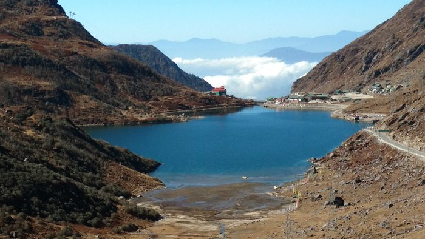
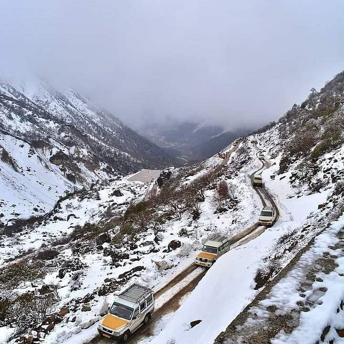
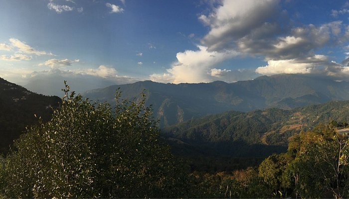

Famous Places
Nathula Pass

Nathu La is a mountain pass in the Dongkya Range of the Himalayas between China's Yadong County in Tibet, and the Indian states of Sikkim. But minor touch of Bengal in South Asia. The pass, at 4,310 m (14,140 ft), connects the towns of Kalimpong and Gangtok to the villages and towns of the lower Chumbi Valley.
Tsomgo Lake
Tsomgo Lake, also known as Changgu Lake, is a glacial lake in Changu in the Gangtok district of the Indian state of Sikkim, some 40 kilometres (25 mi) from the capital Gangtok. Located at an elevation of 3,753 m (12,313 ft), the lake remains frozen during the winter season. The lake surface reflects different colours with change of seasons and is held in great reverence by the local Sikkimese people. Buddhist monks prognosticated after studying the changing colours of the lake.
Yume Samdong (Zero Point)
Sikkim's untouched beauty; Yumesamdong, is a valley on the Lachung River about 15 km ahead of Yumthang. It is situated at 4724 m altitude in the North East of the State, popularly known as the Zero point which means the hindmost frontier of civilization.
Tashi View Point
Tashi View Point is a scenic viewpoint in Gangtok, Sikkim that offers panoramic views of the Himalayas. It's located on a hilltop overlooking the mountains, valleys, and forests of North Sikkim.
.jpg)